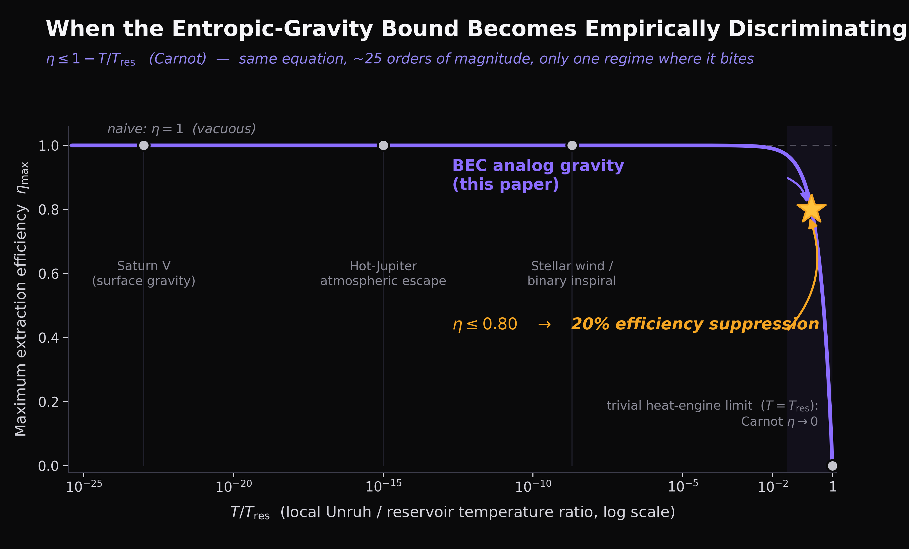

The plain-language companion to "The Phonon Bound" (Zenodo, 2026) — and the opening curtain on our second act, out among the black holes. Full works below.
Welcome to Act Two. Our first nine stories chased information's speed limits from your genes to a computer chip. Now we follow that same thread — the deep tangle between information and energy — clean off the planet and into the physics of gravity itself. Buckle up.
Back in 2011, a physicist named Erik Verlinde floated one of those ideas so audacious it makes you put your coffee down. Gravity, he suggested, isn't a fundamental force at all. It's more like the universe being lazy — its relentless tendency to spread out, to slump toward the messiest, most-spread-out arrangement of things. The way a stretched rubber band wants to snap back isn't a mysterious "rubber force" — it's just the molecules craving disorder. Verlinde said gravity is the same kind of craving, written across the sky. Apples don't fall because a force yanks them; they fall because the universe is settling into a comfier position.
It was beautiful. It even coughed up Newton's laws from scratch. And it had one quietly fatal flaw that nobody liked to mention out loud: you could never test it.
Beautiful, and Utterly Useless
Here's why. Verlinde's idea does make a prediction — about the maximum efficiency of squeezing energy out of gravity. But everywhere gravity actually matters — planets, stars, black holes — the two temperatures in the equation are so cartoonishly lopsided that the fancy prediction just collapses into "efficiency can't top 100%." Well — yes. Thank you. So does a toaster. So does everything. A prediction that only ever says "you can't break the laws of physics" isn't a prediction; it's a fortune cookie.
So the whole game becomes: find one weird corner of reality where those two temperatures are actually close — close enough that the prediction says something sharp instead of something obvious.
Enter the Black Hole in a Jar
And there is such a corner, and it's wonderful. For twenty years, physicists have been building fake black holes in the lab — chilling a puff of gas to a hair above absolute zero until it turns into a strange quantum soup, then setting it flowing so that sound waves inside it get trapped exactly the way light gets trapped by a real black hole. A sonic event horizon. A little Hawking-radiation simulator you can hold in a jar.
And in that jar, the two temperatures aren't a laughable trillion-to-one apart. They're more like five to one. Suddenly Verlinde's toothless prediction grows fangs. So we asked the question he never quite got around to: in this jar, exactly how efficiently can you pull energy out — and can a lab actually check?
The Answer Is an Old, Old Rule
Grind through a couple pages of careful bookkeeping and out pops the ceiling on efficiency. And here's the satisfying part — it turns out to be one of the oldest, most trustworthy speed limits in all of physics: the Carnot limit, the same iron rule that says your car engine can never turn all its gasoline into motion because some heat always, always escapes out the tailpipe. Verlinde's exotic entropic gravity, cornered in a jar of cold gas, has to obey the very same law as a Model T.
Plug in the numbers a real lab can hit, and that ceiling lands at 80% — a crisp 20% haircut off what you'd naively expect if you ignored the whole effect. And 20% is big. It's well above the noise floor of today's cold-atom experiments. Which means: for possibly the first time ever, Verlinde's fifteen-year-old dream might be checkable — a real number a real lab can go measure.
The Part Where We Own the Weak Spot
Now, the honest confession, because a paper with a load-bearing assumption should wave it in the air, not tuck it under the rug. This whole result balances on one specific assumption about how heat flows in the jar. Not a proven theorem — an assumption. So we did the responsible thing and stress-tested it five different ways with careful simulations.
And here's where we have to be more honest than is comfortable — because when we looked hard at those five tests, four of them turned out to be rigged in our favor. Not on purpose — but they were secretly just double-checking our own arithmetic, the mathematical equivalent of proving 2+2=4 by counting to four. They couldn't have failed. Only the fifth test could genuinely have blown up in our faces… and it did. For one exotic, delicately-prepared kind of state, the assumption cracked wide open.
So the grown-up verdict isn't "we proved it." It's a careful scope statement: the whole framework holds up as long as the system is ordinary and warm — which the sound-waves in a real jar naturally are — and falls apart for exotic, coldly-tuned states. Which means the experiment has a rule attached: use ordinary phonons, not fancy ones. We'd rather hand you that fine print up front than let you discover it the hard way.
What We Are Emphatically NOT Claiming
This is the most important paragraph, so read it slowly. We did not rewrite gravity. We did not overthrow Newton or Einstein. We did not unify entropy and gravity into some grand theory of everything. Anyone who tells you we did is selling something.
The claim is small, deliberately. It's this: if you take Verlinde's idea seriously and run the honest thermodynamics, you get one specific, checkable number in one specific jar of cold gas — and a lab could go check it in the next few years. That's the whole thing. Small, yes. But sharp. And a small sharp thing that can actually be tested beats a grand fuzzy thing that can't, every single day of the week.
Why This Opens a New Track
Our first nine papers were one complete journey — the speed limit on information, ribosome to GPU. This one starts a different road, using the same trusty mathematical compass (the plain laws of heat and entropy) pointed at a wholly new landscape: the thermodynamics of gravity, black holes, and the fabric of spacetime.
Both roads share one stubborn conviction: that the humble bookkeeping of energy and entropy quietly sets the outer limits of what anything in the universe can do — a cell, a computer, or a collapsing star. We open this second act with a single testable prediction and no map. Where it goes depends on what the laboratories find — and on the next question brave enough to ask. Papers 11 through 16 are that second act, and they get stranger, and more beautiful, from here.
The Phonon Bound is Paper 10 of the Windstorm Institute — the first paper in the Entropic Bounds in Analog Systems track.
Zenodo: 10.5281/zenodo.20014390 ·
Code & data: github.com/Windstorm-Institute/phonon-extraction-bound
Download the full paper (PDF) ·
Markdown source
Comments & questions
Comments are powered by GitHub Discussions. Sign in with your GitHub account below, or browse all discussions on GitHub. No GitHub account? It takes 30 seconds to make one — or email Grant directly if you'd rather skip it.